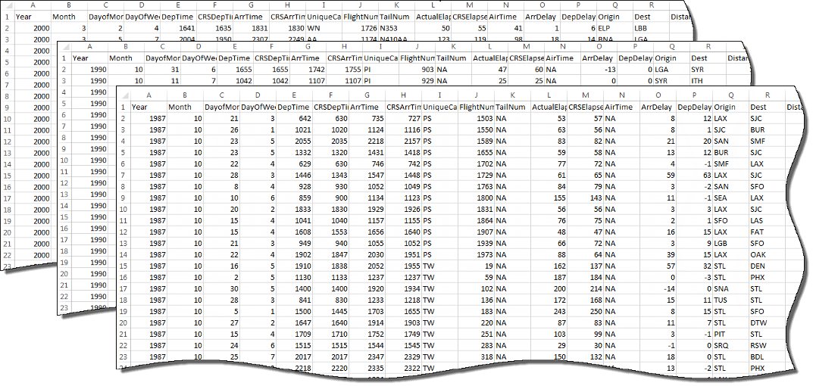
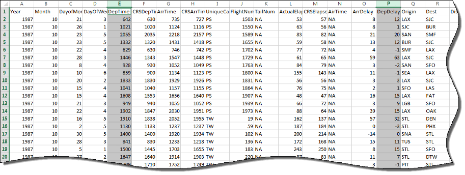

Getting Started with Datastore
What Is a Datastore?
A datastore is an object for reading a single file or a collection of files or data. The datastore acts as a repository for data that has the same structure and formatting. For example, each file in a datastore must contain data of the same type (such as numeric or text) appearing in the same order, and separated by the same delimiter.

A datastore is useful when:
Each file in the collection might be too large to fit in memory. A datastore allows you to read and analyze data from each file in smaller portions that do fit in memory.
Files in the collection have arbitrary names. A datastore acts as a repository for files in one or more folders. The files are not required to have sequential names.
You can create a datastore based on the type of data or application. The different types of datastores contain properties pertinent to the type of data that they support. For example, see the following table for a list of MATLAB® datastores. For a complete list of datastores, see Select Datastore for File Format or Application.
| Type of File or Data | Datastore Type |
|---|---|
| Text files containing column-oriented data, including CSV files. | TabularTextDatastore |
Image files, including formats that are supported by
imread such as JPEG and PNG. | ImageDatastore |
Spreadsheet files with a supported Excel® format such as .xlsx. | SpreadsheetDatastore |
Key-value pair data that are inputs to or outputs of
mapreduce. | KeyValueDatastore |
| Parquet files containing column-oriented data. | ParquetDatastore |
| Custom file formats. Requires a provided function for reading data. | FileDatastore |
Datastore for checkpointing tall arrays. | TallDatastore |
Create and Read from a Datastore
Use the tabularTextDatastore function to create a datastore from
the sample file airlinesmall.csv, which contains departure and arrival
information about individual airline flights. The result is a
TabularTextDatastore object.
ds = tabularTextDatastore('airlinesmall.csv')ds =
TabularTextDatastore with properties:
Files: {
' ...\matlab\toolbox\matlab\demos\airlinesmall.csv'
}
Folders: {
' ...\matlab\toolbox\matlab\demos'
}
FileEncoding: 'UTF-8'
AlternateFileSystemRoots: {}
PreserveVariableNames: false
ReadVariableNames: true
VariableNames: {'Year', 'Month', 'DayofMonth' ... and 26 more}
DatetimeLocale: en_US
Text Format Properties:
NumHeaderLines: 0
Delimiter: ','
RowDelimiter: '\r\n'
TreatAsMissing: ''
MissingValue: NaN
Advanced Text Format Properties:
TextscanFormats: {'%f', '%f', '%f' ... and 26 more}
TextType: 'char'
ExponentCharacters: 'eEdD'
CommentStyle: ''
Whitespace: ' \b\t'
MultipleDelimitersAsOne: false
Properties that control the table returned by preview, read, readall:
SelectedVariableNames: {'Year', 'Month', 'DayofMonth' ... and 26 more}
SelectedFormats: {'%f', '%f', '%f' ... and 26 more}
ReadSize: 20000 rows
OutputType: 'table'
RowTimes: []
Write-specific Properties:
SupportedOutputFormats: ["txt" "csv" "xlsx" "xls" "parquet" "parq"]
DefaultOutputFormat: "txt"After creating the datastore, you can preview the data without
having to load it all into memory. You can specify variables (columns)
of interest using the SelectedVariableNames property
to preview or read only those variables.

ds.SelectedVariableNames = {'DepTime','DepDelay'};
preview(ds)ans =
8×2 table
DepTime DepDelay
_______ ________
642 12
1021 1
2055 20
1332 12
629 -1
1446 63
928 -2
859 -1 You can specify the values in your data which represent missing
values. In airlinesmall.csv, missing values are
represented by NA.
ds.TreatAsMissing = 'NA';If all of the data in the datastore for the variables of interest
fit in memory, you can read it using the readall function.
T = readall(ds);
Otherwise, read the data in smaller subsets that do fit in memory, using the
read function. By default, the read function
reads from a TabularTextDatastore 20,000 rows at a time. However, you can
change this value by assigning a new value to the ReadSize property.
ds.ReadSize = 15000;
Reset the datastore to the initial state before re-reading,
using the reset function. By calling the read function
within a while loop, you can perform intermediate
calculations on each subset of data, and then aggregate the intermediate
results at the end. This code calculates the maximum value of the DepDelay variable.
reset(ds) X = []; while hasdata(ds) T = read(ds); X(end+1) = max(T.DepDelay); end maxDelay = max(X)
maxDelay =
1438If the data in each individual file fits in memory, you can
specify that each call to read should read one
complete file rather than a specific number of rows.
reset(ds) ds.ReadSize = 'file'; X = []; while hasdata(ds) T = read(ds); X(end+1) = max(T.DepDelay); end maxDelay = max(X);
In addition to reading subsets of data in a datastore, you can apply map and reduce functions
to the datastore using mapreduce or create a tall array using
tall. For more information, see Getting Started with MapReduce and Tall Arrays for Out-of-Memory Data.
See Also
tabularTextDatastore | imageDatastore | spreadsheetDatastore | KeyValueDatastore | fileDatastore | tall | mapreduce